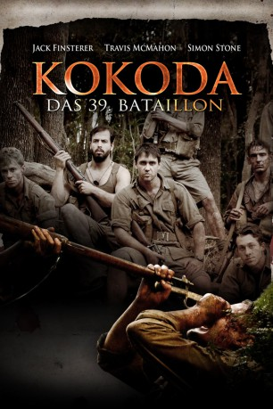

#10409 Kokoda - Das 39. Bataillon
Alternativ: Kokoda: 39th Battalion (Englischer Titel)
 
 IMDB-Wertung: 6.2 / 10
IMDB-Wertung: 6.2 / 10  Metascore: 0
Metascore: 0 
New Guinea, 1942, Australien befindet im Krieg gegen Japan. Eine kleine australische Gruppe des 39. Bataillons befindet sich als Vorhut in der Nähe von Kokoda. Nach heftigen Kämpfen sind sie vollkommen auf sich alleine gestellt, es gibt weder Kommunikation nach außen noch Nachschub. Weit hinter den feindlichen Linien isoliert, müssen sie den Weg zurück antreten. Durch gefährlichen Dschungel, ohne Nahrung, geschwächt durch Malaria und böse Verwundungen, immer bereit, dem Feind ins Auge zu blicken. Doch am Ende ihrer Kräfte steht ihnen die härteste Prüfung noch bevor...
Jahr: 2006
Dauer: 96 Minuten
FSK:
Land: Australien Studio: Palace FilmsTonspuren: DTS - ,
Untertitel: Deutsch,
Auflösung: 1080p (1920x1040) Größe: 6062 MB
Genre: Action, Drama, Krieg
Regisseur: Alister Grierson
Drehbuch: Alister Grierson, John Lonie
Soundtrack: John Gray
Darsteller:
- Simon Stone als Max Scholt
 Luke Ford als Burke
Luke Ford als Burke Tom Budge als Johnno
Tom Budge als Johnno Steve Le Marquand als Sam
Steve Le Marquand als Sam Angus Sampson als Dan
Angus Sampson als Dan Christopher James Baker als Blue
Christopher James Baker als Blue Ewen Leslie als Wilstead
Ewen Leslie als Wilstead- William McInnes als The Colonel
- Kit McDee als Officer - AIF
- Hunter McMahon als Wounded Soldier
- Jack Finsterer als Jack Scholt
- Travis McMahon als Darko
- Ben Barrack als The Lieutenant
- Shane Bourne als The Doctor
- Darren Taylor als Soldier - Forward Position
- Lucas Stibbard als Wounded Man
- Jeffey Gunn als Smiling PNG Stretcher Bearer
- Stefan Cooper-Fox als Digger (2 / 16 Battalion)
- Kyle Baxter als Runner
- Chris Hillier als Digger - AIF
- Damien Cassidy als Lieutenant
- Joel Amos Byrnes als Wounded Soldier
- Louis Toshio Okada als Japanese Soldier
- Koichi Waki als Japanese Soldier
- Matthew Wollaston als Wounded Soldier
- Brenton Ashe als Australian Soldier (uncredited)
- Matthew McDowell als ADF soldier (uncredited)
Datei: X:\2006(G-M)\Kokoda - Das 39. Bataillon (2006, FSK, 1920x1040).mkv seit 04.01.2019
Festplatte: HD 2005(G-Z)-2006(A-Z)
 Es gibt insgesamt 48 Filme in der Gruppe '2006(G-M)'
Es gibt insgesamt 48 Filme in der Gruppe '2006(G-M)'